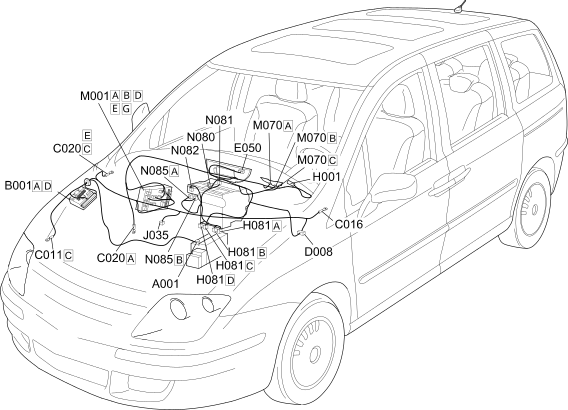

E6020 AIR CONDITIONING COMPONENTS LOCATION
- Path
- Electrical equipment > 1 ELECTRICAL FUNCTIONS > E60 CLIMATE CONTROL SYSTEM > E6020 AIR CONDITIONING > E6020 AIR CONDITIONING COMPONENTS LOCATION
- Kind
- topic
- Applies to
- engines: 2.0 16V JTD, 2.2 16V JTD; all production periods; only with equipment: MY 2005
- Interactive page
- https://sloeber94.github.io/elrnDB-fUlss/en/#/179009374
Applies to: engines: 2.0 16V JTD, 2.2 16V JTD; all production periods; only with equipment: MY 2005

Component code | Description | Reference to the assembly |
|---|---|---|
BATTERY | - | |
ENGINE COMPARTMENT JUNCTION UNIT | ||
RIGHT FRONT EARTH | - | |
AIR CONDITIONING UNIT EARTH | - | |
PASSENGER SIDE DASHBOARD EARTH | - | |
AIR CONDITIONING-HEATER FRONT COUPLING | - | |
INSTRUMENT PANEL | ||
Ignition switch | ||
CLIMATE CONTROL FAN OPERATION | ||
PASSENGER COMPARTMENT AIR FAN RELAY | - | |
BODY COMPUTER | ||
CLIMATE CONTROL SYSTEM CONTROL UNIT | - | |
AIR DISTRIBUTION FLAP ACTUATOR | ||
MIXTURE FLAP ACTUATOR | ||
OUTSIDE AIR/RECIRCULATION INTAKE FLAP ACTUATOR | ||
PASSENGER COMPARTMENT AIR FAN | - |
Topics linked from this page (21)
- 5040C AIR CONDITIONER BOX AND COMPONENTS
- 5040D AIR CONDITIONER CONTROLS
- 5505A MULTI-FUNCTION COMPONENTS
- 5520A IGNITION SWITCH
- 5560B ANALOGUE CONTROL PANEL
- A001 BATTERY
- B001 ENGINE COMPARTMENT JUNCTION UNIT
- C011 RIGHT FRONT EARTH
- C016 AIR CONDITIONING UNIT EARTH
- C020 PASSENGER SIDE DASHBOARD EARTH
- D008 AIR CONDITIONING-HEATER FRONT COUPLING
- E050 INSTRUMENT PANEL
- H001 Ignition switch
- H081 CLIMATE CONTROL FAN OPERATION
- J035 PASSENGER COMPARTMENT AIR FAN RELAY
- M001 BODY COMPUTER
- M070 CLIMATE CONTROL SYSTEM CONTROL UNIT
- N080 AIR DISTRIBUTION FLAP ACTUATOR
- N081 MIXTURE FLAP ACTUATOR
- N082 OUTSIDE AIR/RECIRCULATION INTAKE FLAP ACTUATOR
- N085 PASSENGER COMPARTMENT AIR FAN